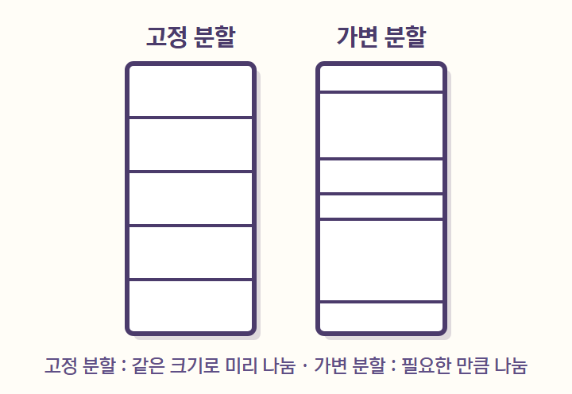
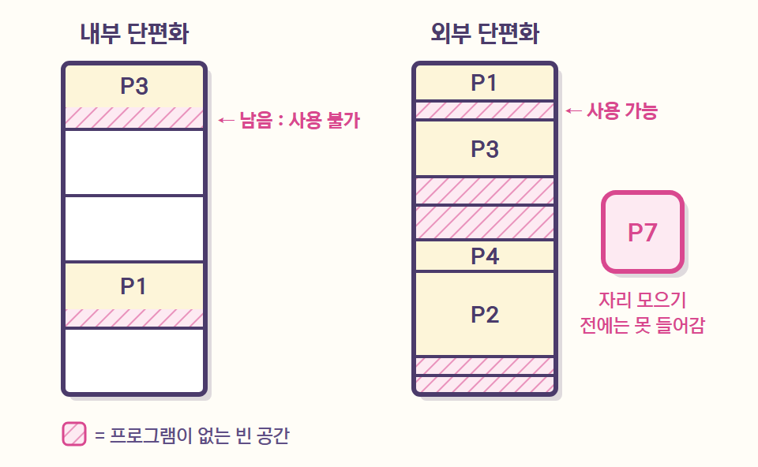

3.3.1
기억장치관리 요건
기억장치관리 요건
- 실기억장치 관리법
- 단일 할당 기법 (단일 연속 방법) : 단일 사용자 환경, 한 사용자가 주기억장치를 전용으로 사용
- 장점 : 단순
- 단점 : 낭비가 심함, 주기억장치보다 큰 프로그램 수행 X
- 오버레이(중첩) 기법 : 주기억장치보다 큰 프로그램을 실행하기 위해 하나의 프로그램을 분할한 후 적재, 공간이 모자라면 중첩
- 스와핑 기법 : 필요에 따라 다른 프로그램과 교체 (swap in - swap out → 가상기억장치 페이징으로 발전)
- 현재 메인 메모리에 적재되어 있지만 실행 중이지 않은 프로세스를 저장장치로 옮겨 보관 → 메모리 사용의 효율성 증가
- swap out : 메인 메모리 → 저장장치로 이동, swap in : 저장장치 → 메인 메모리로 이동
- 다중분할할당 기법 : 여러 프로세스, 입력 큐에서 대기하는 프로세스에게 가용 기억장치 할당
- 고정 분할형 : 기억장치를 고정된 크기들로 분할하여 적당한 곳에 수행 프로그램 배치 (분할 작업큐 방식 / 공통 작업큐 방식)
- 장점 : 다중 프로그래밍 가능, 수행 속도 증가 (CPU 효율적으로 사용)
- 단점 : 단편화에 의해 기억장치 낭비, 수행할 프로그램 크기를 미리 알아야 함
- 가변 분할형 : 미리 구분하지 않고 필요에 따라 기억장치를 분할해 사용하는 방법 (필요한 만큼)
- 장점 : 단편화 방지, 입출력 장치 등 자원 효율적 사용 가능
- 단점 : 기억장치 집약 시간 낭비, 작업의 크기가 기억장치 용량에 의해 제약, 외부 단편화 현상
- 고정 분할과 가변 분할 모양 : 고정 분할은 미리 정한 같은 크기의 칸들로 나누어 두고, 가변 분할은 프로세스에게 필요한 크기만큼 잘라서 씀

- 고정 분할형 : 기억장치를 고정된 크기들로 분할하여 적당한 곳에 수행 프로그램 배치 (분할 작업큐 방식 / 공통 작업큐 방식)
- 단일 할당 기법 (단일 연속 방법) : 단일 사용자 환경, 한 사용자가 주기억장치를 전용으로 사용
- 연속 메모리 할당 (contiguous memory allocation)
- 각 프로세스가 필요로 하는 메모리 크기를 미리 알고, 그 프로세스에게 메모리를 할당해 줄 때 한 덩어리로 할당해 주는 것
- 장점 : 그 프로세스를 실행할 때 필요한 코드들을 쉽게 찾을 수 있음
- 단점 : 프로세스가 종료된 뒤 메모리에서 내보내고 그 자리에 다른 프로세스를 적재하기를 반복하다 보면 외부 단편화 발생 (조금씩 남은 부스러기 조각들이 생김)
- 단편화
- 주기억장치에서 사용되지 않고 낭비되는 공간
- 내부 단편화 : 하나의 분할에 빈 공간이 생기는 것 (적재 후 남은 공간 사용 불가능) → 고정 분할에서 많이 발생
- 외부 단편화 : 대기 중인 작업이 분할보다 커서 분할이 남는 경우 (적재 전 분할 영역이 나뉘어 있어서 프로그램을 적재할 만한 자리가 없는 경우) → 가변 분할에서 많이 발생
- 통합 : 이웃 가용 공간 합치기
- 압축 (쓰레기 수집) : 여러 개 모아서 합치기 (단점 : 전체를 모으기 위해 시스템 작업이 중단됨)
- 페이징과 세그멘테이션 : 한 프로세스의 논리 주소 공간을 여러 개로 나누어 비연속적인 물리 메모리 공간에 할당 (오히려 프로세스를 조각으로 나누는 방법)
